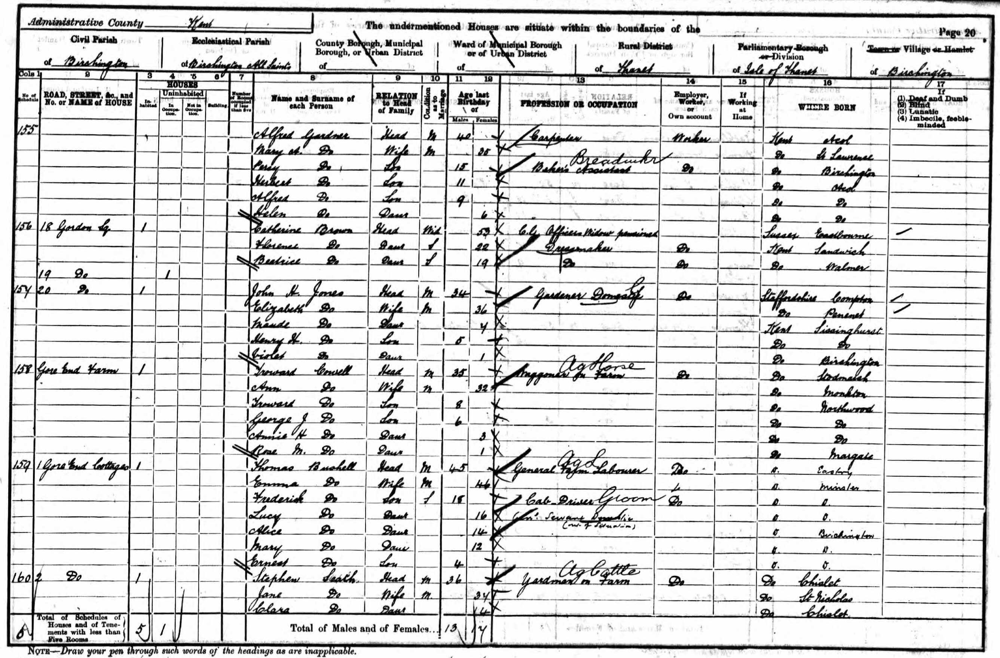
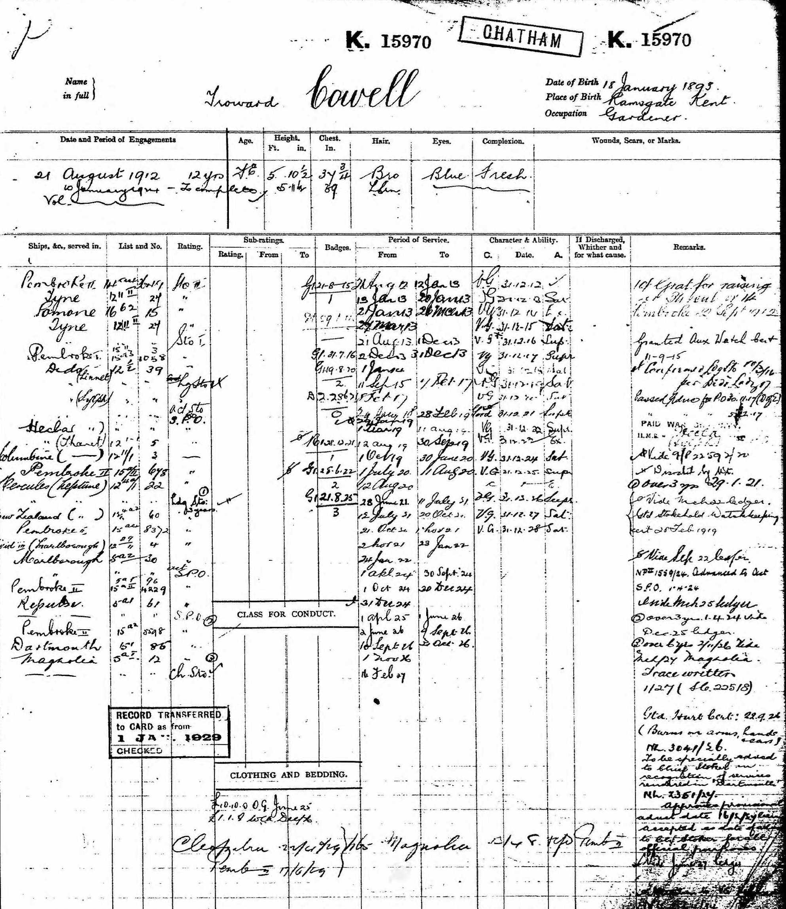
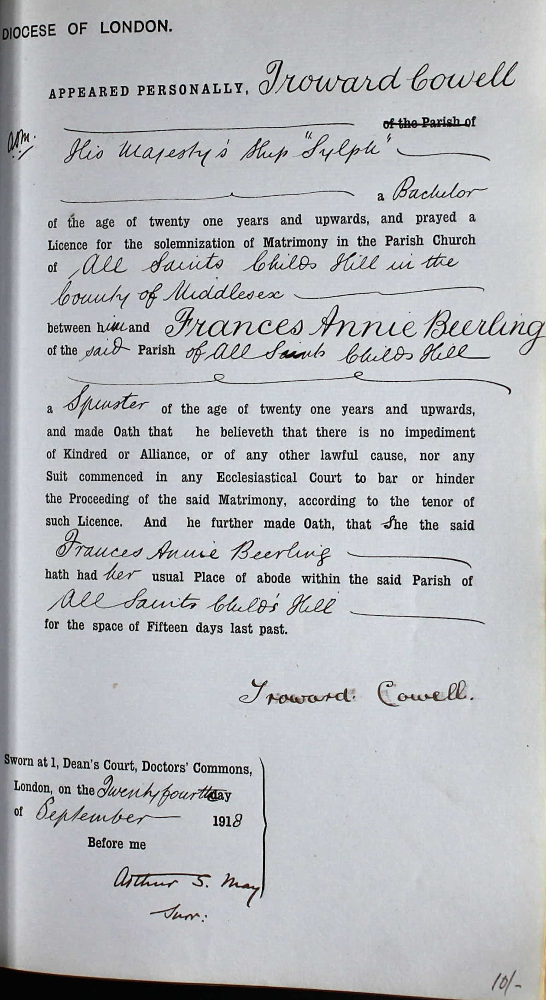
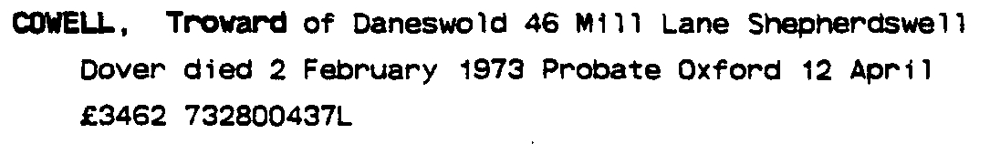

Troward Cowell 1893 - 1973
[ Home ] | [ Calendar ] | [ Surnames Index ] | [ Family History ]A x434 portsmouth rm police life pensioner ex royal navy and the son of Troward Cowell (a horseman) and Ann Dennett, Troward Cowell, the first cousin twice-removed on the mother's side of <a href="I1.html">Nigel Horne</a>, was born in Northwood, Kent, England on Jan 18, 1893<span class="citation">1,2,3,4,5,6</span>, was baptized in Monkton, Kent, England on Mar 26, 1893 and married Frances Beerling (with whom he had 2 children: <a href="I1302.html">Troward</a> and <a href="I1301.html">Harold Victor Neville</a>) in Hendon, London, England on Sep 24, 1918<span class="citation">7</span>.</p><p>Throughout his life, Troward lived in several places: at Gore End Farm, Birchington, Kent, England on Mar 31, 1901<span class="citation">8</span> and on Apr 2, 1911<span class="citation">9</span>; on 47 Amberley Road, Portsmouth, Hampshire, England on Sep 29, 1939<span class="citation">3</span>; at Sherwood, Westcourt Lane, Shepherdswell, Kent in 1962; and at 46 Mill Lane, Shepherdswell, Kent in 1973. He served in the navy (<em>Royal Navy - Pembroke II</em>).<p>He died on Feb 2, 1973 in Dover, Kent<span class="citation">5</span>.
Parents
- Troward was born c. May 1865
- Ann was born on Jul 3, 1868
Children
- Troward was born on Jan 19, 1919
- Harold Victor Neville was born on May 22, 1920
Citations
- 1901 England Census Online publication - Provo, UT, USA: The Generations Network, Inc., 2005.Original data - Census Returns of England and Wales, 1901. Kew, Surrey, England: The National Archives of the UK (TNA): Public Record Office (PRO), 1901. Data imaged from the National
- 1911 England Census Online publication - Provo, UT, USA: Ancestry.com Operations, Inc., 2011.Original data - Census Returns of England and Wales, 1911. Kew, Surrey, England: The National Archives of the UK (TNA), 1911. Data imaged from the National Archives, London, England.
- 1939 Register - Findmypast (was the head of the household)
- England & Wales deaths 1837-2007 - Findmypast
- England & Wales, Death Index: 1984-2005 Online publication - Provo, UT, USA: The Generations Network, Inc., 2007.Original data - General Register Office. England and Wales Civil Registration Indexes. London, England: General Register Office. © Crown copyright. Published by permission of the Cont
- England & Wales, FreeBMD Birth Index, 1837-1915 Online publication - Provo, UT, USA: The Generations Network, Inc., 2006.Original data - General Register Office. England and Wales Civil Registration Indexes. London, England: General Register Office. © Crown copyright. Published by permission of the Cont
- England & Wales marriages 1837-2008 - Findmypast
- 1901 England, Wales & Scotland Census - Findmypast (was age 8 and the son of the head of the household)
- 1911 Census for England & Wales - Findmypast (was age 18 and the son of the head of the household)
Notes
Brown hair, blue eyes, height 5' 11".
Media
1901 UK Census

Troward Cowell - Naval Record

Troward Cowell - Frances Beerling - Marriage Bond

Troward Cowell - probate

Troward Cowell - 1962 Telephone Directory

England & Wales deaths 1837-2007 - BMD/D/1973/1/AZ/000289/012
England & Wales births 1837-2006 - BMD/B/1893/1/AZ/000132/081
Royal Navy Seamen 1899-1919 Transcription - GBM-ADM188-243281
England & Wales marriages 1837-2008 Transcription - BMD-M-1918-3-AZ-000243-124
England, Births & Baptisms 1538-1975 Transcription - R_884578932
1911 England, Wales & Scotland Census Transcription - GBC-1911-RG14-04479-0323-5
1901 England, Wales & Scotland Census Transcription - GBC-1901-0005518440
1939 Register Transcription - TNA-R39-2257-2257I-007-10
1901 England, Wales & Scotland Census Transcription - GBC-1901-0005518437
1911 England, Wales & Scotland Census Transcription - GBC-1911-RG14-04479-0323-3
Family Tree

Generated by Ged2Site. Last updated on Jul 20, 2025